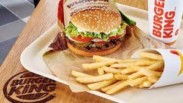

My Favorite Recipe
Burger King Comfort Food
Ingredients
- Smartphone with the Burger King app installed
- A car (preferably a 2013 Scion xB)
- At least $10 in your checking account
- A decent-sized appetite
- Untreated Depression (optional)
Instructions
- Open the Burger King app on your smartphone
- Add a Double Cheeseburger with only ketchup to your order
- Add a Large Onion Rings to your order
- Add an 8-pc Chicken Nuggets to your order
- Place your order and select your payment method
- Go out to your car and drive to your local Burger King restaurant
- Pull into the drive-thru and tell them that you have a mobile order for (your name here)
- Pull around to the window
- Silently commiserate with the employee who's just as over it all as you are
- Softly utter a "thank you" when they hand you your order
- Drive back home
- Turn on a fictional TV program of your choice
- Eat
- Wonder where it all went so wrong